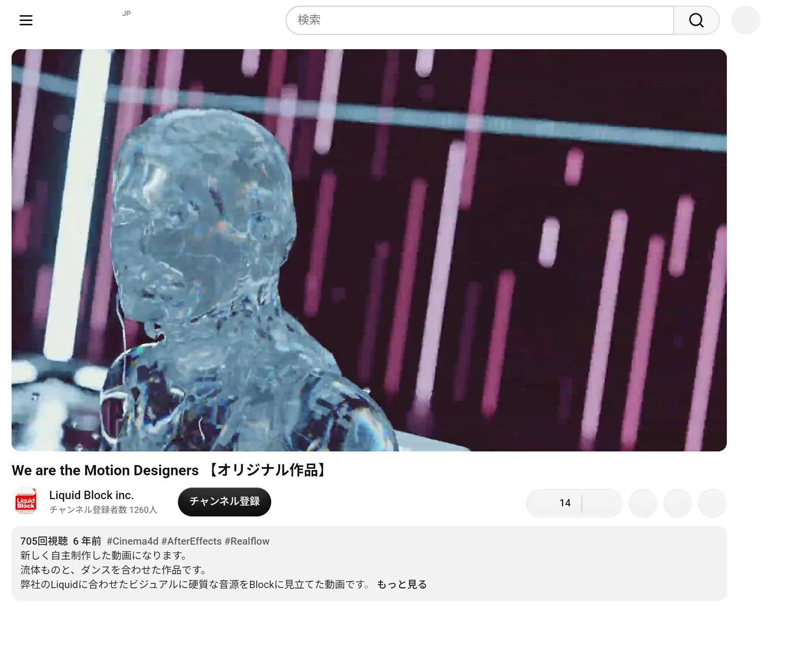
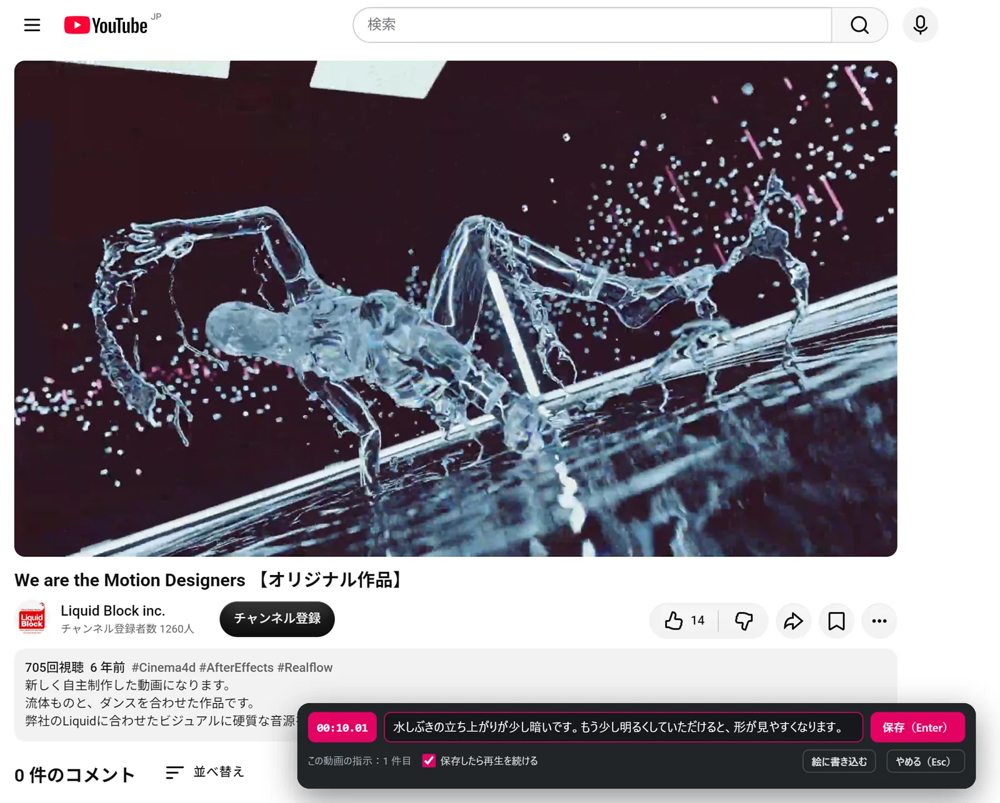
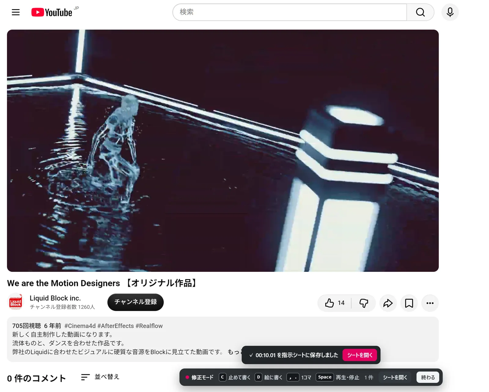
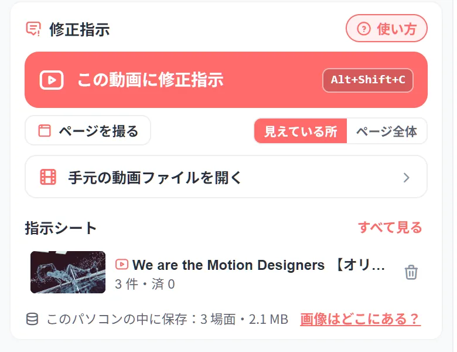
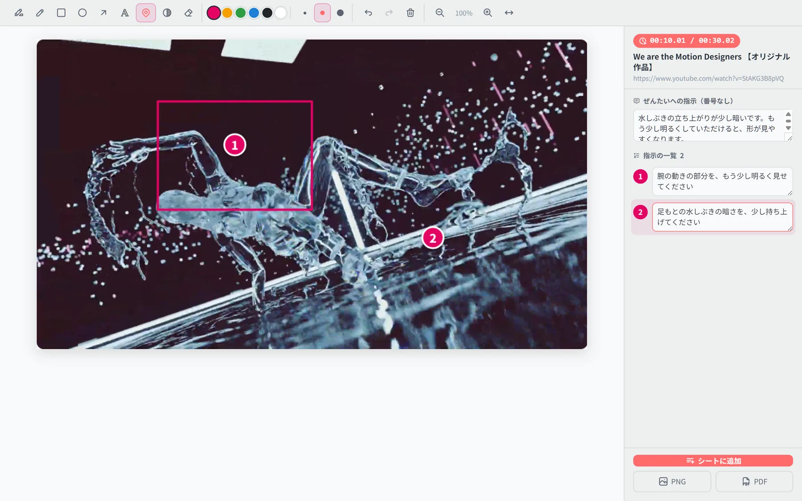
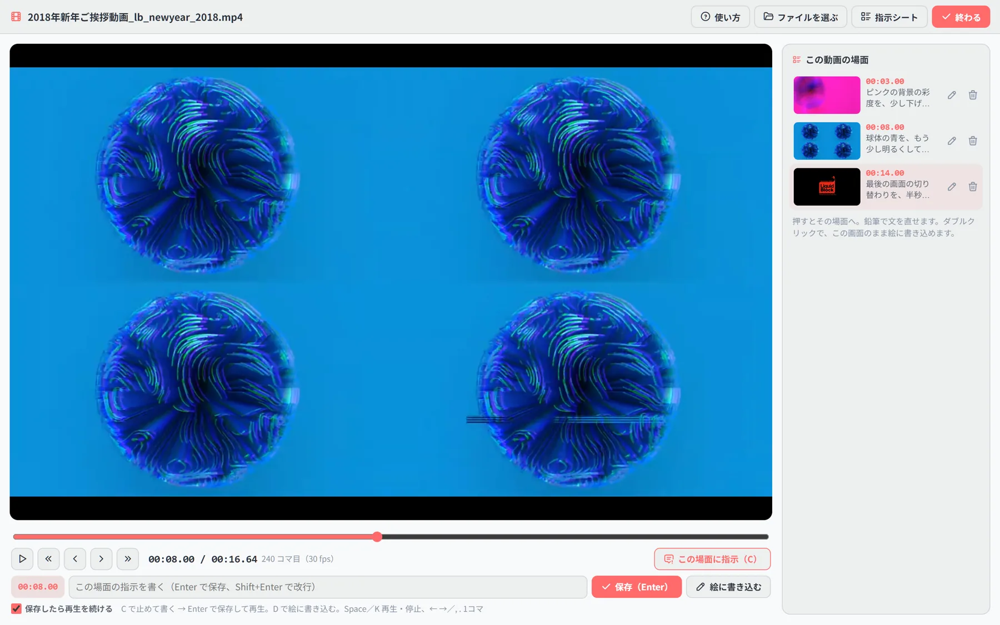
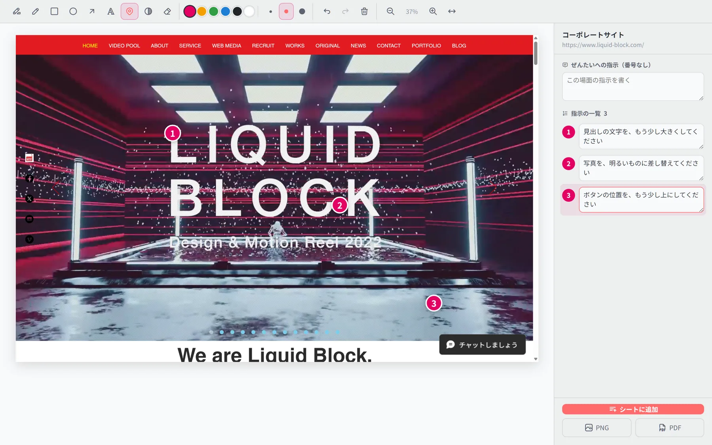
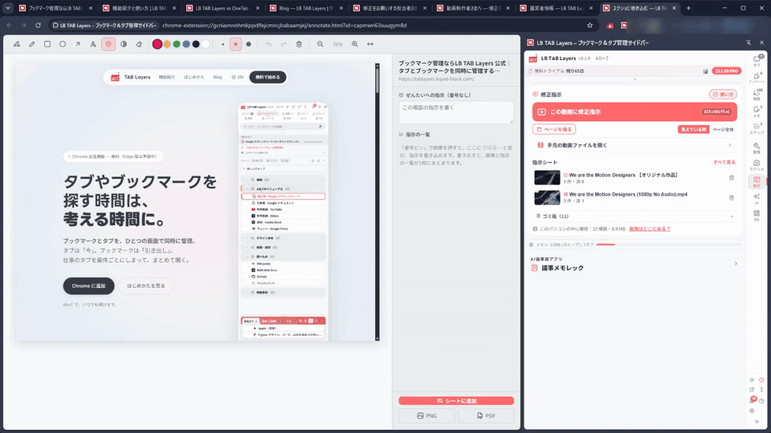
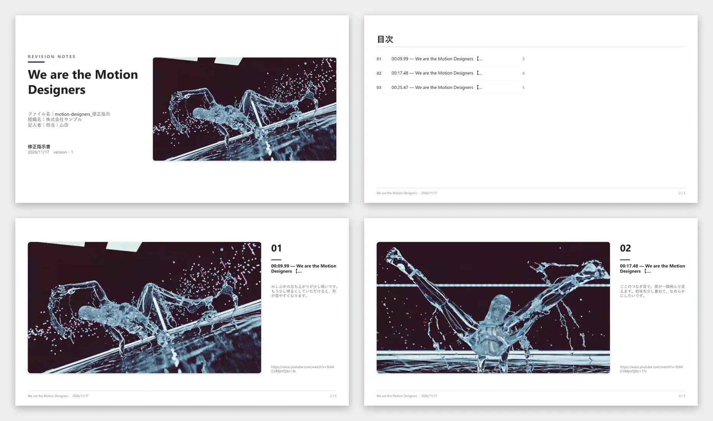

なぜ、この方法で出すのか
動画の修正は、チャットや共有のリンクで集めると、関係者の誰でも書き込めて、意見が1か所にまとまりません。矛盾した指示が重なり、修正が膨らんで、担当者さまにも、制作者にも、負担になります。
おすすめは、ご自身で一度整えて、1回で渡すことです。社内のご意見を集めたら、場面ごとに区切り、同じ内容はまとめ、矛盾はそこで解消して、制作者に必要な情報だけを渡します。LB TAB Layers の「修正指示」は、この作業を、迷わずできるように作られています。
3つの手順
- Chrome に、LB TAB Layers を入れるアカウント登録は要りません。Chrome ウェブストアで「Chrome に追加」を押すだけです。お試し期間中は、すべての機能を無料で使えます。
- 見ている動画やページに、修正を書く修正したい動画やページを開き、サイドパネル（Alt+T）の「修正」を押します。
・動画：動画を止めて、その場で文を書き、Enter で保存します（再生は続きます）。YouTube・Vimeo・Google ドライブの動画のほか、手元の動画にも使えます。
・画像・Webサイト：「このページに修正指示」を押すと画面が撮られます。番号ピンで場所を押して、指示を書きます。 - 指示シートを整えて、制作者に渡す書いた指示は、再生位置の順に「指示シート」にまとまります。社内のご意見を、ここで整理して、同じ内容はまとめます。整ったら、PDF・PowerPoint・テキストなどで書き出して、制作者へ1回で送ってください。
実際の画面で見る
実際の画面です。順番に見ていくと、どんな操作かが分かります。








動きで見る
同じ操作を、実際に動かしたところです（画面は拡張機能の実物です）。




渡す書類の、出来上がりの見え方
書き出した書類は、このように見えます。制作者は、これを受け取ります。




画面は、当社が制作した動画「We are the Motion Designers」で撮影したものです。
なぜ、あえて手作業なのか
ご意見を、自動で1つにまとめる機能は、あえて付けていません。まとめる作業は、ご自身で一度、目を通していただくためのものです。
どの意見を採り、どれを見送るかは、案件を一番ご存じの担当者さまにしか決められません。ご自身の手で整えた指示は、制作者にとって迷わず動ける、確かな指示になります。結果として、修正の回数も減ります。
安心して使っていただくために
- アカウント登録は不要です
- 撮った画像と指示は、お使いのパソコンの中だけに残ります。当社には送りません（プライバシーポリシー）
- Chrome の設定画面や Chrome ウェブストアなど、拡張機能が動かないページは、撮れません
- 修正指示は PRO の機能ですが、お試し期間中は、すべて使えます
くわしい使い方は「【機能ガイド】修正指示」にあります。
制作者の方へ — 担当者さまに送る、お願いの文面
担当者さまに、この案内ページを送るときの文面です。そのままコピーして、〇〇の部分を書き換えてお使いください。
動画制作者さま向けの案内は、「動画制作者さまへ — 修正を、整理された形で、1回で受け取る方法」にあります。